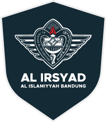

Visi
Mencetak generasi Islami, cerdas, terampil, dan mandiri.
Profil Sekolah
Sekolah Islam Terpadu di Bandung yang memadukan Kurikulum Nasional dan Kurikulum Khas Al-Irsyad dengan nilai-nilai Islam.
#mannerbeforeknowledge

SMPIT Al-Irsyad Al-Islamiyyah berada di Jalan Cikutra No.205 A, Kelurahan Neglasari, Kecamatan Cibeunying Kaler, Kota Bandung.
Kami memadukan Kurikulum Nasional dan Kurikulum Khas Al-Irsyad dengan nilai-nilai Islam, berpijak pada prinsip manner before knowledge: adab lebih dulu, baru ilmu.
Pembelajaran berjalan lewat tiga konsep: Islamic Manner, Knowledge, Skill & Language, dan Specialization.
Mencetak generasi Islami, cerdas, terampil, dan mandiri.
Santun kepada teman, guru, dan orang tua, sesuai Qur'an dan Sunnah.
Hafalan dan bacaan Al-Quran, literasi, serta berpikir kritis.
Karakter 5C, Bahasa Inggris, dan Bahasa Arab.
Pembinaan lewat pemantapan, pengayaan, dan ekstrakurikuler.